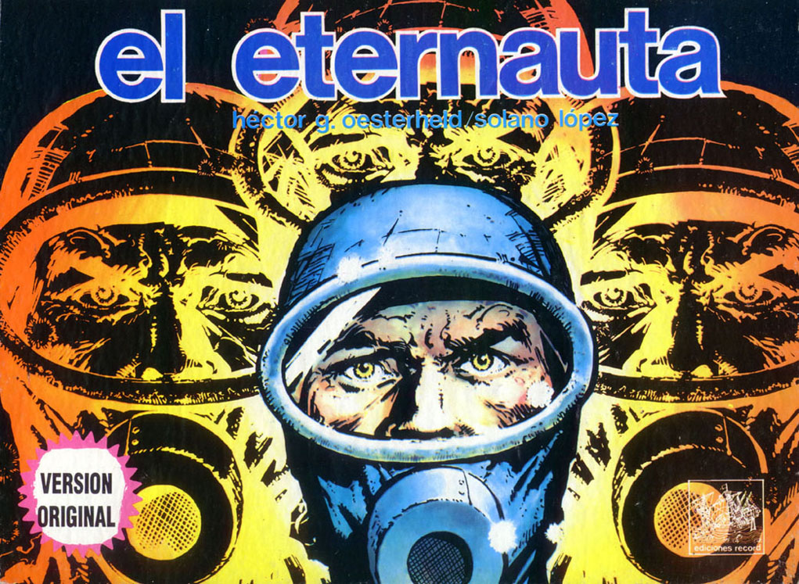
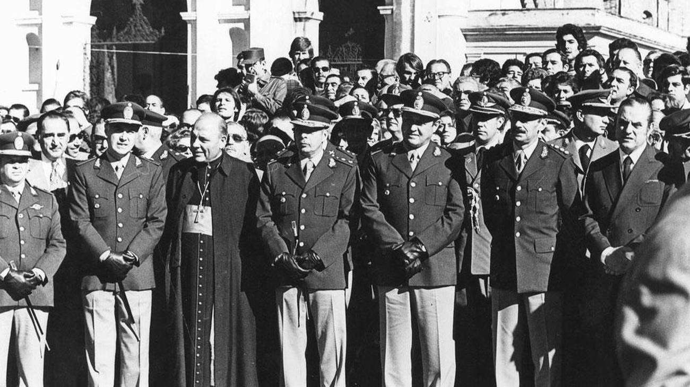
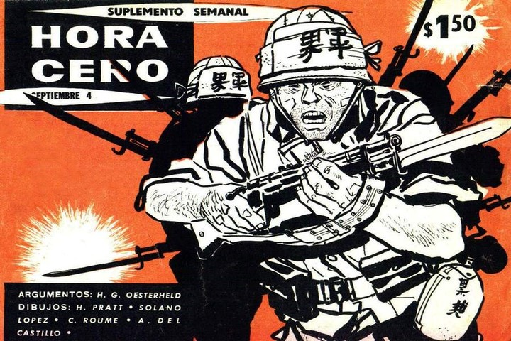

¿QUÉ ES EL ETERNAUTA?
¿Qué es El Eternauta? El Eternauta es una historieta argentina de ciencia ficción, considerada una de las obras más importantes del género en Latinoamérica. Fue escrita por Héctor Germán Oesterheld y dibujada por Francisco Solano López. La historia se publicó por primera vez en 1957 en la revista Hora Cero Semanal, y tuvo un total de 106 entregas. Más adelante fue recopilada en libros y reeditada en diferentes versiones. La trama gira en torno a Juan Salvo, un hombre común que, junto a su familia y amigos, enfrenta una invasión alienígena en Buenos Aires. Lo más llamativo es que la historia comienza con una nevada mortal que cae sobre la ciudad, y obliga a los personajes a improvisar trajes para sobrevivir. Con una fuerte crítica social y política, El Eternauta se convirtió en una obra de culto. A lo largo de los años, se realizaron continuaciones y adaptaciones, algunas por los mismos autores y otras por diferentes equipos creativos. También se han hecho ediciones especiales, versiones teatrales y ahora, una nueva serie basada en la historia original.
¿Quién lo hizo?
El Eternauta fue creado por Héctor Germán Oesterheld (guionista) y Francisco Solano López (dibujante). Oesterheld fue un escritor y editor argentino reconocido por su estilo comprometido y humano. A través de sus historias, reflejaba temas sociales, políticos y existenciales, algo poco común en las historietas de su época. Solano López, por su parte, aportó un estilo gráfico realista que ayudó a plasmar el clima opresivo y cotidiano de la historia. Hijo de Fernando Oesterheld, de origen alemán y criollo, y de Elvira Ana Puyol, de ascendencia española y vascofrancesa. Estudió y se graduó en la carrera de geología en la Facultad de Ciencias Exactas y Naturales de la Universidad de Buenos Aires. Mientras estudiaba, trabajó como corrector. El 3 de enero de 1943 publicó su primera obra, un cuento denominado Truila y Miltar, en el suplemento literario del periódico La Prensa. Un año después de terminar sus estudios se casó con Elsa Sánchez. Unos años más tarde decidió abandonar la geología y dedicarse a escribir.

Contexto histórico
La historieta fue publicada por primera vez en 1957, en una Argentina que vivía tensiones políticas y sociales. A pesar de tratarse de ciencia ficción, El Eternauta presentaba una fuerte metáfora política: la invasión alienígena representaba la opresión, y la lucha del pueblo argentino por sobrevivir a lo desconocido se sentía cercana. Décadas más tarde, el propio Oesterheld sería víctima de la dictadura militar argentina. Fue secuestrado y desaparecido en 1977, al igual que sus cuatro hijas. Su destino trágico le dio aún más peso simbólico a su obra.
Las historietas en la Argentina
Argentina tiene una rica tradición historietística. Desde mediados del siglo XX, las revistas como Hora Cero, Fierro, y El Tony se convirtieron en espacios donde autores locales exploraron desde aventuras hasta crítica social. Historietas como Mafalda, Inodoro Pereyra, Sherlock Time y El Eternauta marcaron a generaciones de lectores. Durante los años '50 y '60, el cómic argentino vivió una edad dorada, con guionistas y dibujantes de altísimo nivel. El Eternauta fue una de las obras más influyentes de ese período, y hoy es un ícono cultural que trasciende generaciones.
